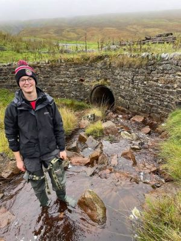

I am Student studying Msc River Basin Management at the Universtiy of Leeds curently developing my python programming skills. This website shows practical work I have completed during my studies.

I have developed a Agent based model in which Agents interact with a environment. More information is available on the Readme.txt file. Functions include:
- Move around the environment in a random way
- eating the environment and throwing up if they have eaten too much
- sharing their resources with with neighbours, or if they have not eaten enough stealing all their neighbours resorces.
- 'Wolfs' walk around the environment and identify if they would eat the agents.
- Display the output animated on a GUI.
Future development would include completing the wolf-agent interaction. So far the distance between wolfs and agents is calculated. If there distance is the same as the neighborhood then Eat is written in a text file. Ideally the agent would be removed from the list if eaten.